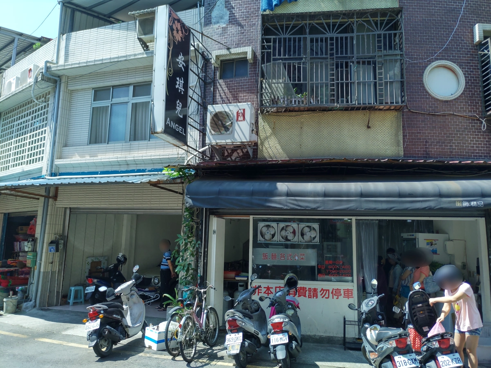
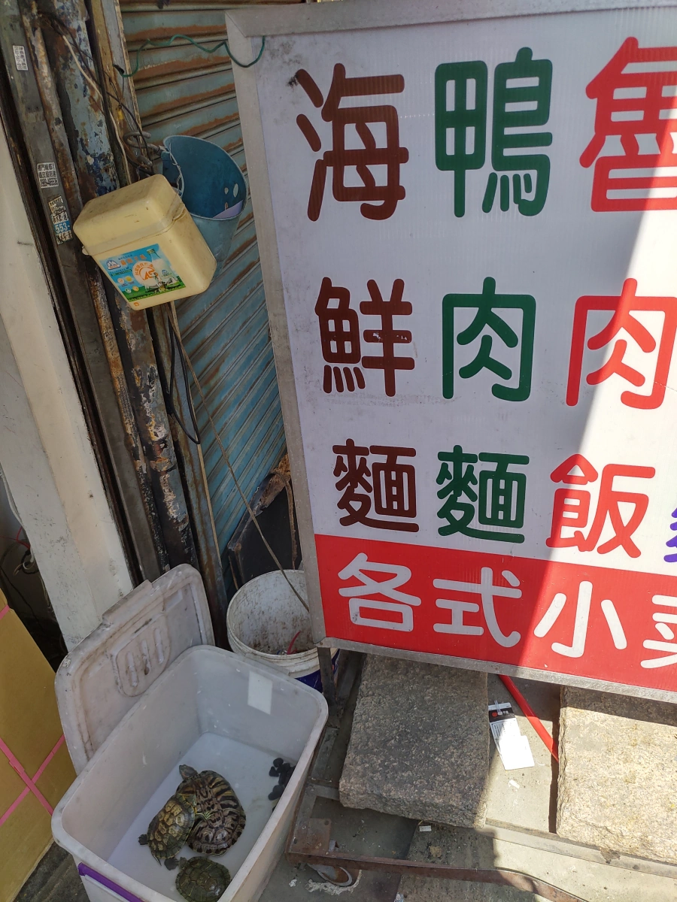
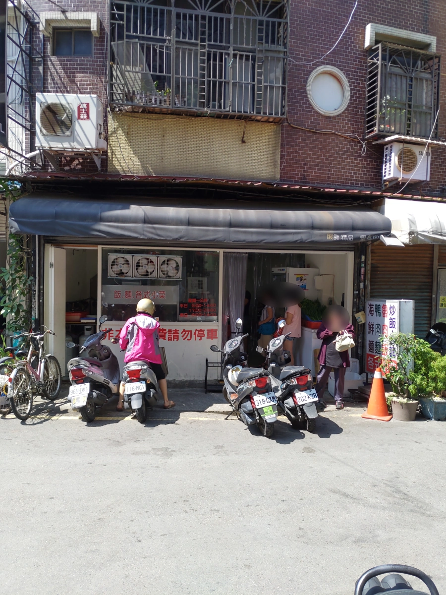
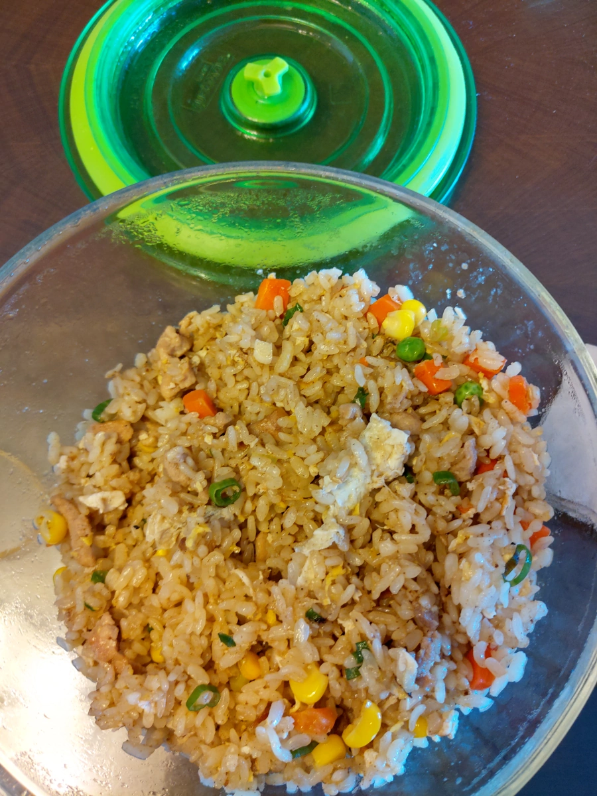

[竹北][竹仁市場 1] 竹北市場海鮮麵
| 餐廳名稱: | 無名，但習慣稱為 竹北市場海鮮麵 |
|---|---|
| 地 址: | 新竹縣竹北市竹仁街75號 |
| 營業時間: | 週二 ~ 週六 06:00 - 14:00 17:00 - 20:00 |
| 週日 06:00 - 14:00 | |
| 週一 公休 | |
| 電 話: | 03 551 0220 |
竹仁市場，又名竹北第一市場、竹北大市場。是竹北最古老、最大的市場，因為是長時間形成的市場， 沒什麼規劃，停車位早就不夠用了，也有一些亂象。可是也因為歷史悠久，存活久的攤商，應該是 有一定的實力，而新店家，如果沒有三兩三，也不敢來這裡擺攤。 其實台北市像西湖市場、中崙 市場等都已經改建成現代化的商場，也增設一些現代化停車場，而且出名的 南門、東門市場，今年 也都會改建，這個竹仁市場，實在也該現代化一點了。
竹仁市場裡面的優秀攤商，網路上資訊少，畢竟竹北還很小，報導的人不多。第一次踏進去時， 實在眼花瞭亂，幾年後，終於累積一點點心得 -
生鮮類，女王比較熟，我知道的不多。
- 有一攤黑豬肉，在古老的市場建築物中，他的黑豬肉很好吃，通常一天宰一頭，很早就賣完。 這市場還有別攤賣黑豬肉的，應該差不多優秀。市場老舊，沒明確住址又沒招牌， 我也沒辦法。除了竹仁，我插播一個住址比較明確的 - 嘉興路338巷巷口的豬肉攤，也蠻常去買的，這邊也很難停車，但比竹仁市場好一點，旁邊常有賣青菜的依附過來，有可能在這個點買肉買菜就都買好了。
熟食類 -
- 湯寶 甜不辣 - 他自製的甜不辣都很好吃。可是一些火鍋料是批來的，那些就比較普通點。
- 溫師傅炸雞，古早味傳統炸雞，古早味胡椒鹽，有 雞翅、雞腿、雞塊、花枝丸、薯條 等，價格也蠻合理的。
早餐，其實市場很多小吃店很早就開了，都能當早餐，不只下列這些店家 -
海莉中西早點 - 竹北市竹仁街8號，聽說30年前是水煎包攤而已，現在是店面，而且是大型外帶早餐店了，還有三明治、蛋餅等很多品項。水煎包是高麗菜的，很優，只可惜我比較愛韭菜的。
秀連燒餅油條店 - 竹北市仁和街86號，在古老的市場建築物中，有一攤賣燒餅的，是燒餅油條的那種燒餅。在一堆生鮮攤當中，有個燒餅油條，蠻奇特的。
以上這些店，下次消費時再報導。
小吃店 -
- 這家 竹北市場海鮮麵 最多人報導，門口沒看到門牌號碼牌，但面對海鮮麵的左邊住戶，門牌號碼牌寫77號，所以推測海鮮麵是竹仁街75號。 可以認77號門牌 或是 二樓的安琪兒招牌。

竹北市場海鮮麵 側面的招牌，今天還把養的烏龜拿出來呼吸新鮮空氣。 
竹仁街75號店面全貌。 
這間店很多都很好吃，經營很多年了。今天是外帶肉絲炒飯，中午時段，很多人排隊外帶，也有內用，可憐的炒手一直炒一直炒，他讓這麼多人吃到好吃的炒飯炒麵，祝福他一生平安，健康快樂。  這種古早味老店的肉絲炒飯，可能有放豬油，也有醬油，整個香噴噴，好吃。大概竹北就剩柯家牛肉麵的炒飯能贏他吧。
接下來，如果有試到什麼優秀攤位，再來報導。也歡迎大家提供優秀攤商。